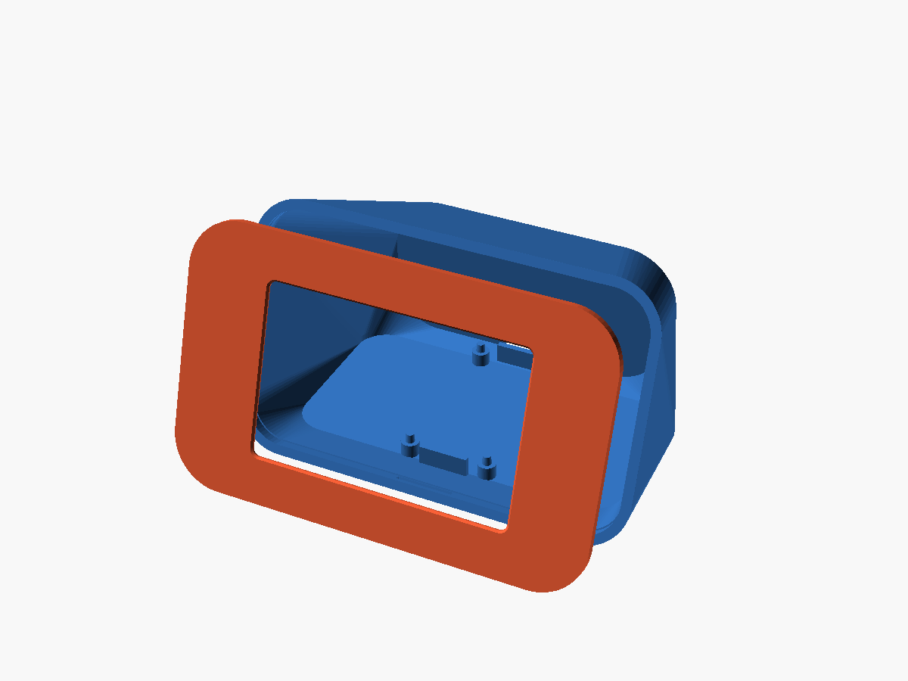
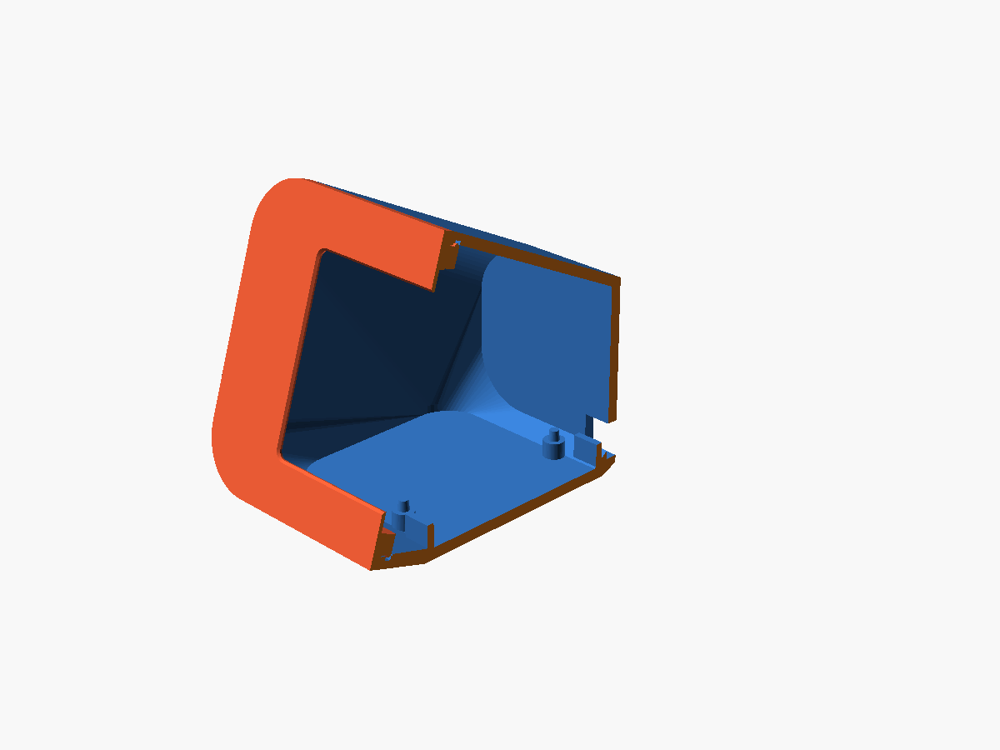
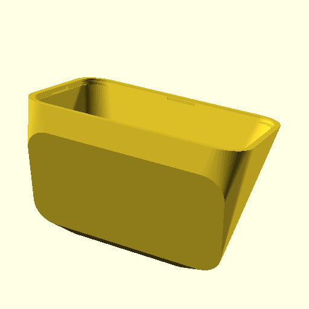
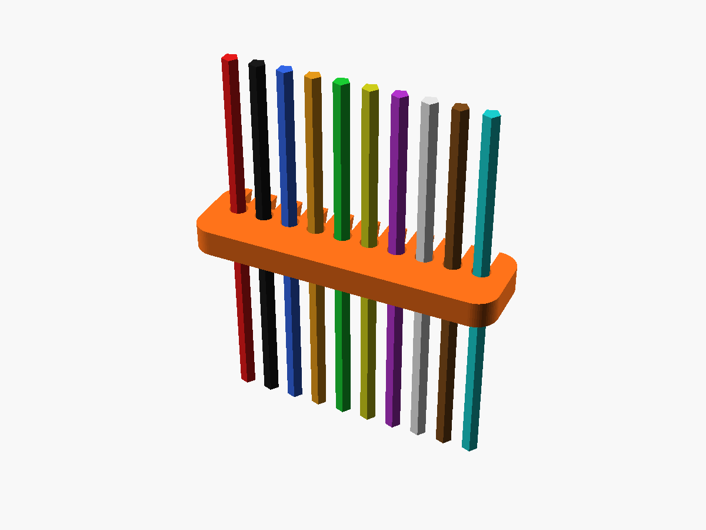

Dispositivo de cabeceira e secretária com ecrã tátil IPS 3.5" (480×320) alimentado por ESP32. Caixa autoportante impressa com zero suportes, sistema híbrido snap-fit e gestão organizada de cabos.
Para pessoas com Diabetes Tipo 1 ou utilizadores de CGM (Dexcom G6/G7, FreeStyle Libre 2/3), a monitorização noturna e de secretária exige visualização imediata da glicemia sem necessidade de ligar o telemóvel nem arriscar distrações com notificações.
Ligação Wi-Fi direta com servidores Nightscout, Dexcom Share ou LibreLinkUp via REST API. Atualizações a cada 60 a 300 segundos com seta de tendência.
Visualização gráfica clara com código de cores: Verde (Normoglicemia 70–180 mg/dL), Amarelo (Hiperglicemia), Vermelho (Hipoglicemia crítica com alerta sonoro/luminoso).
Ângulo de inclinação calibrado contra reflexos de luz ambiente. Linha de visão perfeita quer esteja sentado ao teclado ou deitado na mesa de cabeceira.
Cada detalhe geométrico foi recalculado após testes de tolerância para eliminar completamente suportes no fatiador e evitar que a moldura ou os travões do LCD se soltem.
Face frontal 100% contínua e sem furos passantes. Na aba macho interior de 3.0 mm de profundidade, existem 4 dentes de fecho com rampa a 45° que encaixam nas 4 cavidades correspondentes do corpo com um clique sonoro audível.
O STL é exportado deitado de costas na mesa PEI (área plana de 88 × 46 mm em $Z=0$). Paredes com ângulo de rascunho de ~12° e suportes internos do ESP32 com nervuras chanfradas a 45°. Suportes desligados no fatiador!
Eliminado o problema dos antigos clips que descolavam entre camadas. O novo clip é 100% preenchido (espessura 2.4 mm) e possui um rebaixo cónico superior onde os 4 pinos fendidos da moldura travam mecanicamente de forma definitiva.
Pente elástico com 10 ranhuras tipo fecho-clip com entrada estreitada (1.15 mm) e canal circular (1.4 mm). Alinha os cabos DuPont numa fita plana ordenada, evitando emaranhamentos e folgas soltas no interior da caixa.




Para atingir o melhor acabamento estético sem empenamento e simultaneamente garantir tenacidade elástica que impeça a quebra dos clips com o tempo.
O corpo e a moldura frontal devem ser impressos em PLA (ou PLA Matte). Garante linhas nítidas, zero empenamento (warping) nas dimensões de 92×65 mm e acabamento de alta qualidade na face frontal.
Os clips de retenção do ecrã e o pente organizador de cabos têm de ser impressos em PETG. O PLA sofre de fluência plástica sob tensão contínua (creep), enquanto o PETG flexiona e trava sem quebrar nem descolar.
O projeto foi concebido para utilizar componentes comerciais padrão de baixo custo e ampla disponibilidade no AliExpress, Amazon ou lojas de eletrónica.
| Componente | Especificação Exata | Qtd | Papel no Sistema | Preço Est. (€) |
|---|---|---|---|---|
| Ecrã TFT 3.5" SPI | MSP3520 (KMRTM35018-SPI) ILI9488 480×320 | 1 | Display gráfico, toque XPT2046 e leitor SD integrado | 11.50 € |
| Microcontrolador | ESP32 DevKit V1 (30 ou 38 pinos) ESP-WROOM-32 | 1 | Processamento dual-core, Wi-Fi 2.4GHz e HTTPS client | 4.50 € |
| Cablagem Interna | Fios DuPont Fêmea-Fêmea 10–15 cm | 10 | Ligação ponto-a-ponto organizada com pente elástico | 1.00 € |
| Alimentação & Cabo | Cabo USB Micro / Type-C (1.5 m) | 1 | Alimentação standard 5V via carregador USB (500mA min) | 2.00 € |
| Filamentos 3D | PLA (~65 g) + PETG (~5 g) | ~70 g | Corpo autoportante, moldura lisa, clips e organizador | 1.80 € |
| Fixações Auxiliares | 4x Parafusos M2×6 mm ou M2.5×6 mm (para ESP32) | 4 | Fixação do ESP32 nos postes de 6 mm da base | 0.50 € |
| INVESTIMENTO TOTAL ESTIMADO: | ~21.30 € – 25.00 € | |||
* Preços médios de retalho online incluindo portes combinados. Não requer soldaduras se forem usados conectores com pinos pré-instalados.
O ESP32 comunica com o controlador ILI9488 a frequências até 40 MHz através da interface Hardware SPI (VSPI). Siga rigorosamente esta correspondência de pinos.
| Pino LCD (MSP3520) | Pino ESP32 | Função de Hardware | Cor Fio Recomendada |
|---|---|---|---|
| 1. VCC | VIN (5V) | Alimentação do LDO do ecrã | Vermelho |
| 2. GND | GND | Massa Comum | Preto |
| 3. CS | GPIO 15 | Chip Select (Display) | Amarelo |
| 4. RESET | GPIO 4 (ou 3.3V) | Hardware Reset | Laranja |
| 5. DC / RS | GPIO 2 | Data / Command Selector | Azul |
| 6. SDI (MOSI) | GPIO 23 | SPI Data Master Out | Verde |
| 7. SCK (CLK) | GPIO 18 | SPI Clock Pulse (até 40MHz) | Roxo |
| 8. LED / BL | GPIO 21 (ou 3.3V) | Controlo de Backlight (PWM) | Branco |
| 9. SDO (MISO) | GPIO 19 | SPI Data Master In (Opcional) | Cinzento |
| 10. T_CS / T_IRQ | GPIO 5 / GPIO 25 | Touch Controller (se ativo) | Castanho |
O pente possui 10 ranhuras elásticas desenhadas para cabos standard de 1.3–1.4 mm de diâmetro exterior:
Sem recurso a cola, sem fita adesiva que perde aderência com o calor do ecrã e com manutenção acessível a qualquer momento.
Imprima o corpo e a moldura frontal em PLA com Supports = OFF. Imprima os 2 clips de retenção e o organizador de cabos em PETG sólido.
Coloque a moldura frontal virada para baixo sobre uma superfície macia. Deite a placa do ecrã MSP3520 sobre o batente interior da moldura (o vidro fica centrado na janela chanfrada).
Encaixe os 2 clips de PETG sobre os 4 pinos fendidos da moldura. Pressione para baixo até ouvir o clique duplo: as pontas farpadas travam no rebaixo cónico superior dos clips.
Aparafuse a placa ESP32 nos postes de 6 mm da base com 4 parafusos M2/M2.5. Ligue os fios ao LCD, organize-os no pente elástico e ligue as pontas ao ESP32.
Alinhe a moldura frontal com o degrau de 3 mm do corpo principal. Pressione uniformemente nos 4 cantos até ouvir os 4 cliques sonoros. A caixa fica selada de forma sólida e rente.
Carregue o firmware PlatformIO via USB. Ao ligar, o ecrã inicializa a ligação Wi-Fi, obtém os dados do Nightscout/Dexcom e apresenta a leitura com gráfico temporal.
Janela 70×46.5 mm, 4 pinos fendidos para clips e 4 dentes snap-fit macho.
Exportado deitado de costas na mesa. 4 cavidades snap fêmea e postes ESP32.
2 barras maciças de 2.4 mm com rebaixo superior anti-descolamento.
Pente flexível com 10 ranhuras circulares para fios DuPont.